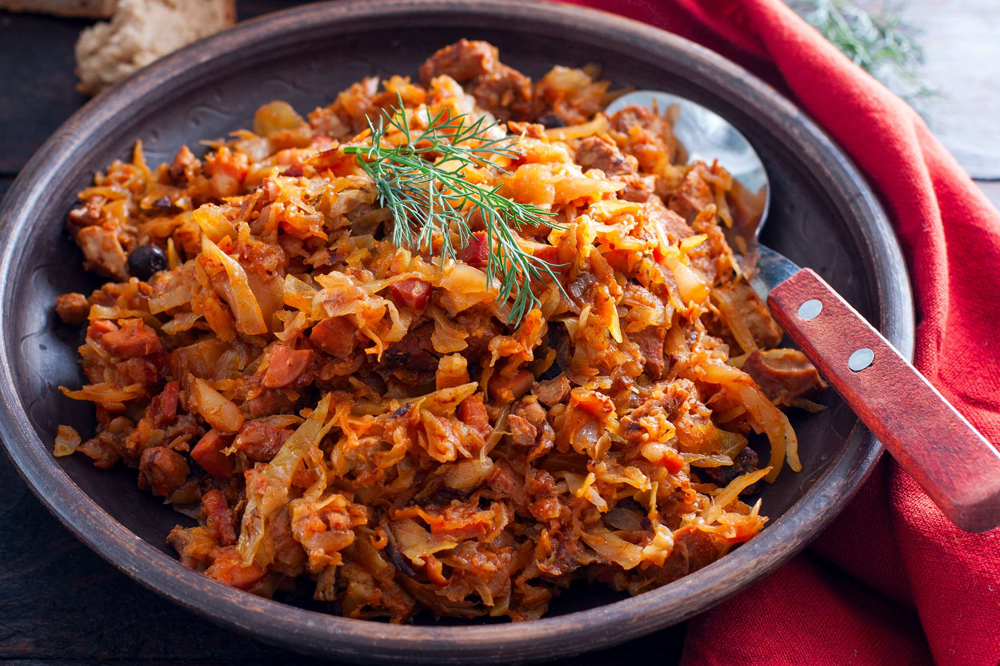

Bigos (Hunter's Stew) recipe

Classic Polish dish
Bigos is a traditional Polish stew using pork, kielbasa, and sauerkraut.
This recipe is well worth the time it takes to make it!
Ingredients
- 1 pound kielbasa sausage, sliced into 1/2 inch pieces
- 2 thick slices hickory-smoked bacon
- 1 pound cubed pork stew meat
- 1/4 cup all-purpose flour
- 4 cups shredded green cabbage
- 2 carrots, diced
- 1 onion, diced
- 1,5 cups sliced fresh mushrooms
- 3 cloves garlic, chopped
- 1 (16 ounce) jar sauerkraut, rinsed and well drained
- 1/4 cup dry red wine
- 1 bay leaf
- 1 tablespoon sweet paprika
- 1 teaspoon dried basil
- 1 teaspoon dried marjoram
- 1/4 teaspoon salt
- 1/8 teaspoon ground black pepper
- 1/8 teaspoon caraway seed, crushed
- 1 pinch cayenne pepper
- 5 cups beef stock
- 1 cup canned diced tomatoes
- 1/2 ounce dried mushrooms
- 2 tablespoons canned tomato paste
- 1 dash bottled hot pepper sauce
- 1 dash Worcestershire sauce
Steps
- Gather the ingredients. Preheat the oven to 350 degrees F (175 degrees C).
- Heat a large pot over medium heat. Add kielbasa and bacon;
cook and stir until bacon has rendered its fat and sausage is lightly browned.
Use a slotted spoon to remove the meat and transfer to a large casserole or Dutch oven.
- Coat cubes of pork lightly with flour and fry them in the bacon drippings over medium-high heat until golden brown.
Use a slotted spoon to transfer pork to the casserole. Add cabbage, carrots, onion, fresh mushrooms, and garlic.
Add in sauerkraut. Reduce heat to medium; cook and stir until carrots are soft, about 10 minutes.
Do not let the vegetables brown.
- Deglaze the pan by pouring in red wine and stirring to loosen all of the bits of food and flour that are stuck to the bottom.
Season with bay leaf, paprika, basil, marjoram, salt, pepper, caraway seed, and cayenne; cook for 1 minute.
- Mix in beef stock, tomatoes, dried mushrooms, tomato paste, hot pepper sauce, and Worcestershire sauce.
Heat through just until boiling. Pour vegetables and all of the liquid into the casserole dish with meat. Cover with a lid.
- Bake in the preheated oven until meat is very tender, 2,5 to 3 hours.
Back to Home Page